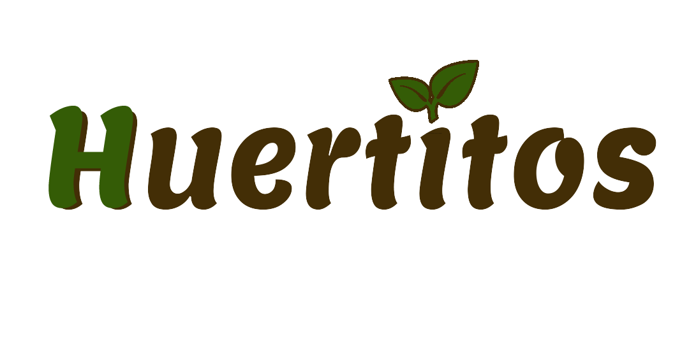

<!-- FONDO -->i
<div class="example-container" [class.example-is-mobile]="mobileQuery.matches" style="background-image: url(../../assets/img/fondo_inicio.png);
background-size: cover;
">
	<!-- BARRA SUPERIOR -->

	<mat-toolbar style="background-color: rgba(255, 255, 255, 0.95); ;" class="example-toolbar flex justify-between">
		<!-- primer bloque -->
		<div class="flex items-center">
			<button mat-icon-button (click)="snav.toggle()" class="m-2 bg-verde-oscuro-transparencia">
				<mat-icon>menu</mat-icon>
			</button>
			

		</div>
		<!-- segundo bloque -->
		<div class="flex items-center">
			<div class="flex justify-center ">
				
			</div>
			<div class="ml-3 flex flex-col text-sm">
				<div class="flex justify-left">
					<span class="font-bold text-black">{{nombre}} {{apellido_paterno}}</span>
				</div>
				<div class="flex justify-left">
					<span class="text-black">{{ocupacion}}</span>
				</div>
			</div>
		</div>
	</mat-toolbar>
	<!-- BARRA LATERAL -->
	<mat-sidenav-container class="example-sidenav-container bg-verde-oscuro-transparencia"
		[style.marginTop.px]="mobileQuery.matches ? 128 : 0">
		<mat-sidenav #snav [mode]="mobileQuery.matches ? 'over' : 'side'" [fixedInViewport]="mobileQuery.matches"
			fixedTopGap="128" class="">
			<!-- LISTA MENÚ -->

			<div class="block w-auto max-h-screen overflow-auto h-sidenav grow basis-full">
				<mat-nav-list class="text-slate-800">

					<a routerLinkActive #dashboard="routerLinkActive" routerLink="/private/dashboard">
						<mat-list-item  [ngClass]="dashboard.isActive? 'bg-fondo-verde-active':''">
							<mat-icon matListIcon>dashboard
							</mat-icon>
							<span matLine class="self-start">Inicio</span>
						</mat-list-item>
					</a>

					<a  routerLinkActive #mis_huertos="routerLinkActive" routerLink="/private/mis-huertos" >
						<mat-list-item [ngClass]="mis_huertos.isActive? 'bg-fondo-verde-active':''">
							<mat-icon matListIcon>dashboard
							</mat-icon>
							<span matLine class="self-start">Mis Huertos</span>
						</mat-list-item>
					</a>
					<a  routerLinkActive #perfil="routerLinkActive" routerLink="/private/perfil">
						<mat-list-item [ngClass]="perfil.isActive? 'bg-fondo-verde-active':''" >
							<mat-icon matListIcon >face</mat-icon>
							<span matLine class="self-start">Perfil</span>
						</mat-list-item>
					</a>

					<a routerLinkActive #info="routerLinkActive" routerLink="/private/info">
						<mat-list-item  [ngClass]="info.isActive? 'bg-fondo-verde-active':''">
							<mat-icon matListIcon >article</mat-icon>
							<span matLine class="self-start" >Más información</span>
						</mat-list-item>
					</a>
					<div class="text-white hover:text-gary-200 flex  pr-4 bottom-0">
						<a href="/public" onclick="cerrarsesion()"> Cerrar sesión </a>
					</div>
				</mat-nav-list>
			</div>
		</mat-sidenav>
		<!-- CONTENIDO -->
		<mat-sidenav-content>
			<router-outlet style="background-color: aliceblue;"></router-outlet>
		</mat-sidenav-content>
	</mat-sidenav-container>
</div>